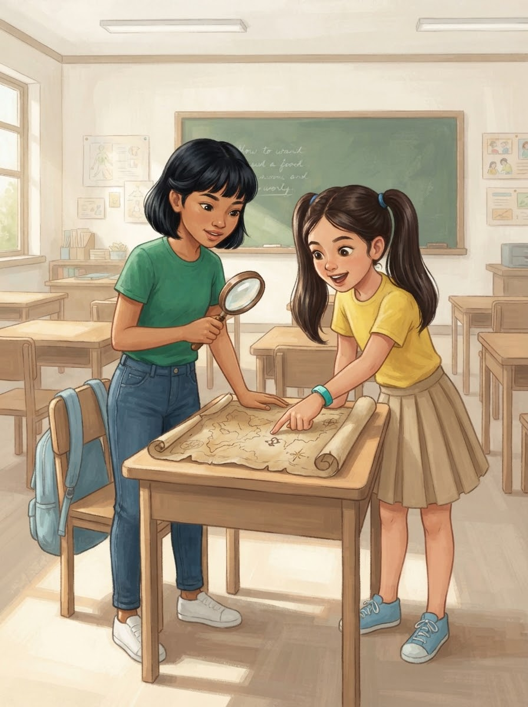
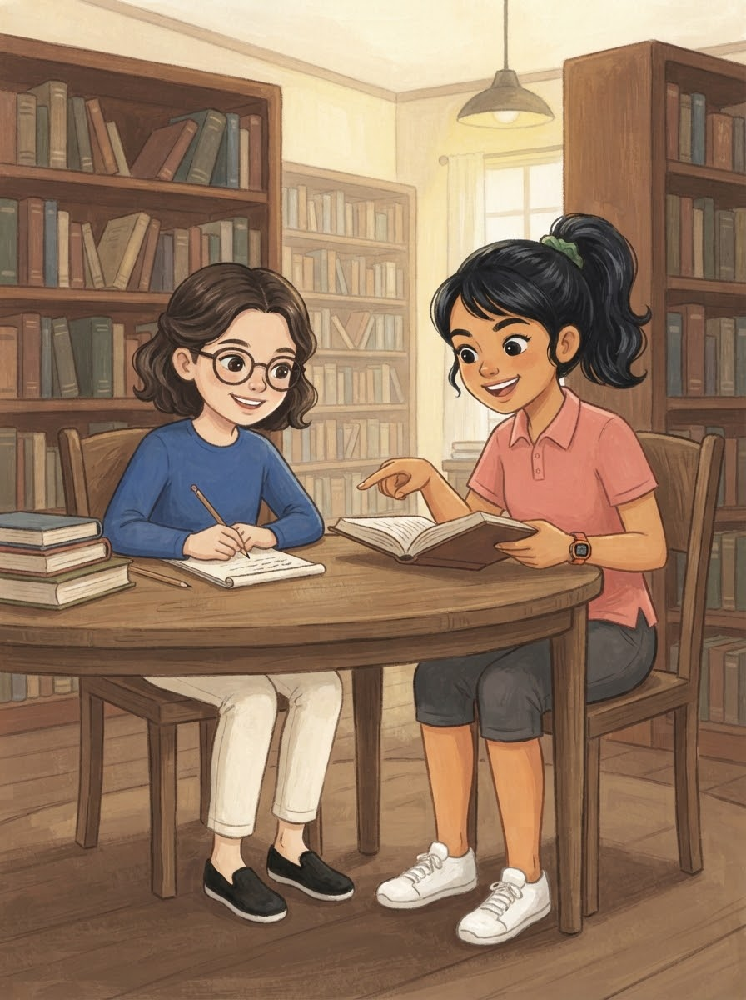
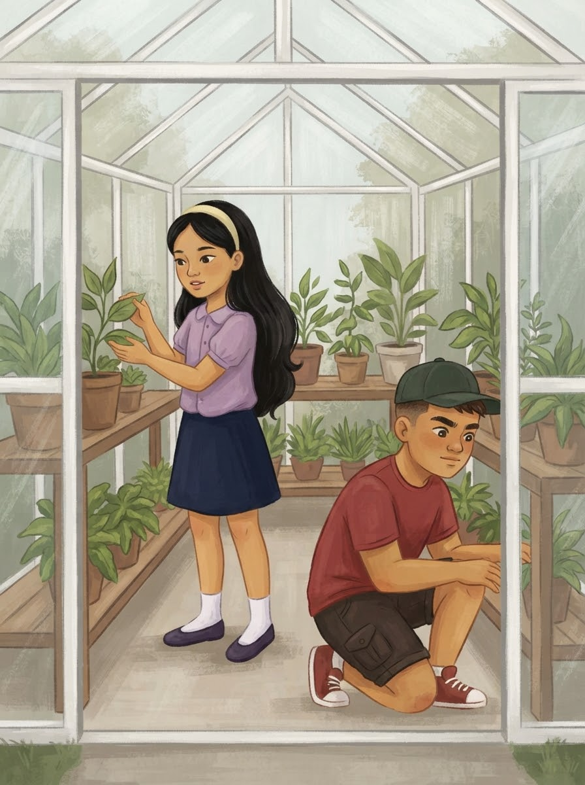
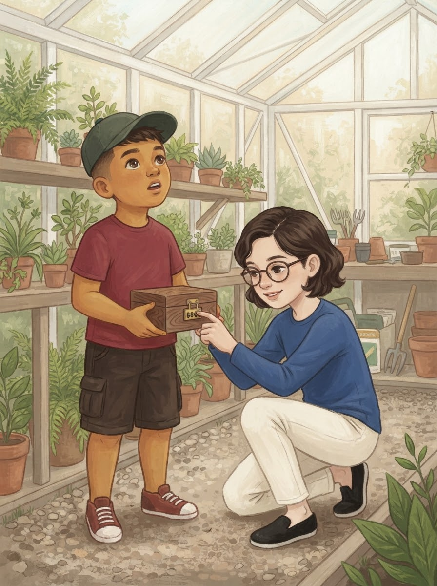
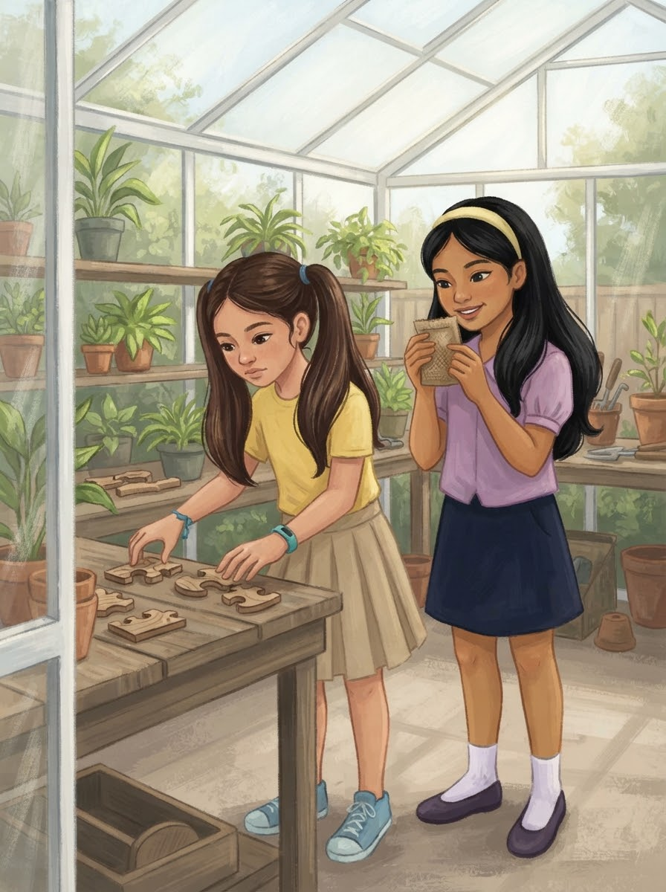
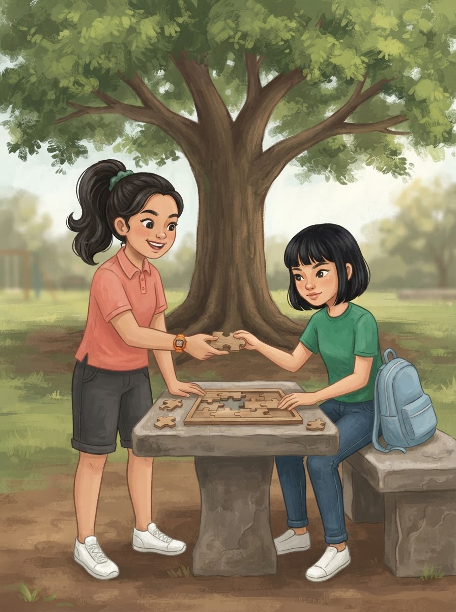
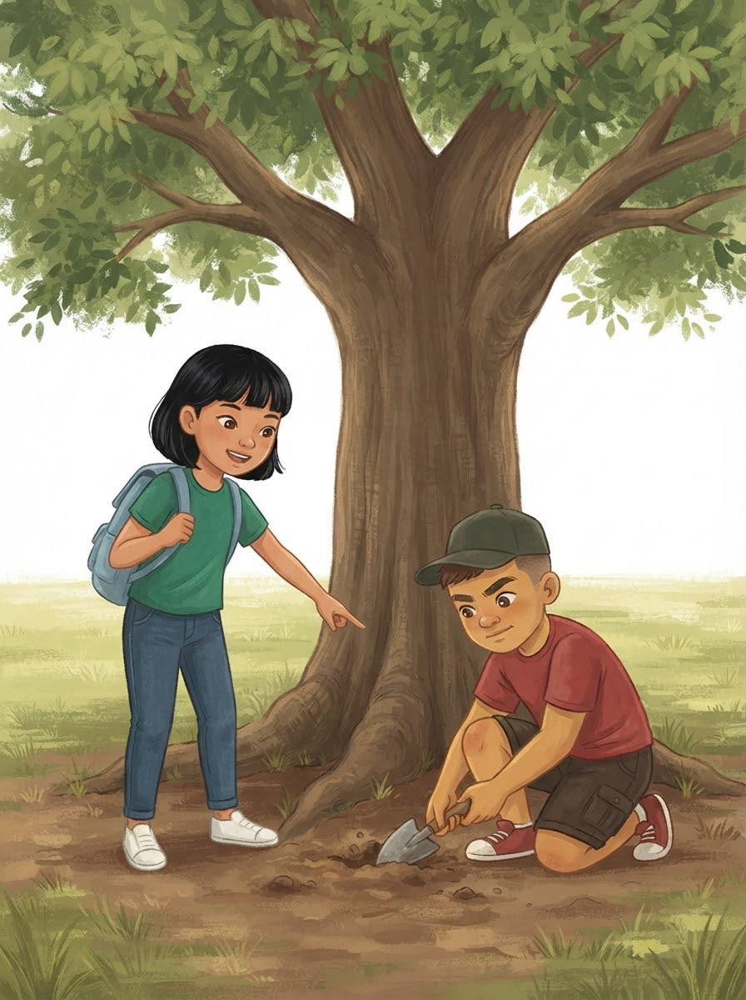
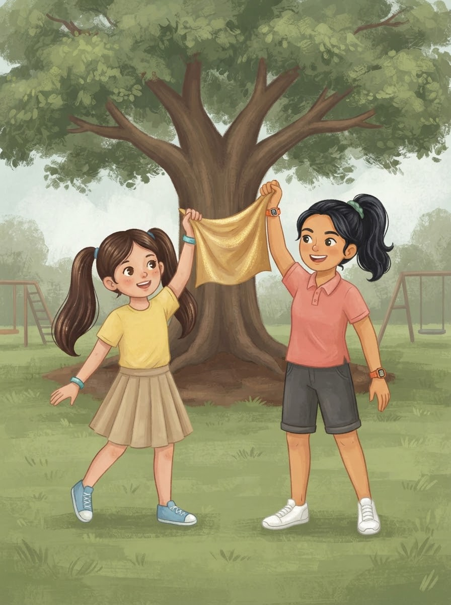
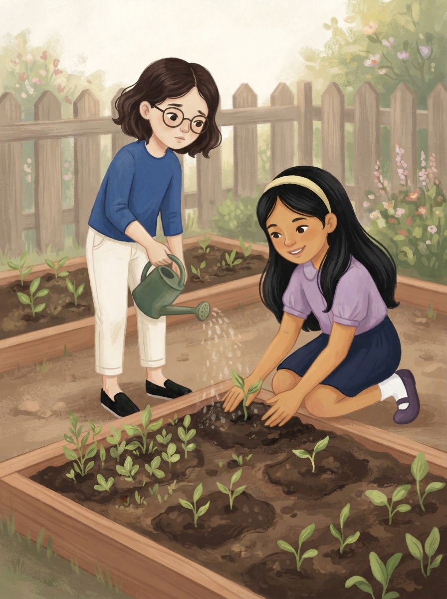
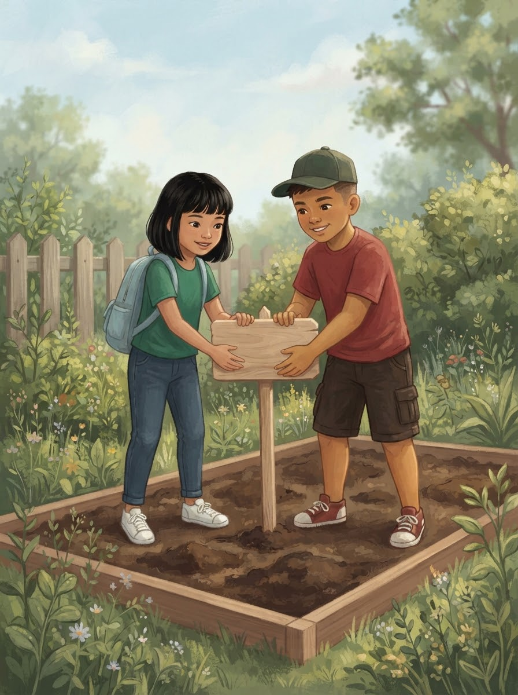

Ang Lihim ng Lumang Halamanan

Ang Lihim ng Lumang Halamanan. Sa San Jose Elementary School, idinaos ang taunang "Agham-Tuklas Challenge" para sa ikalimang baitang. Puno ng kasabikan ang silid-aralan nang iabot ng kanilang guro kina Angel at Yuna ang unang lumang mapa ng halamanan ng paaralan. "Ito na ang simula ng ating dakilang paglalakbay!" masayang bulong ni Angel habang pinag-aaralan ang mga lihim na simbolo sa papel.

Upang malutas ang unang palaisipan sa mapa, kinailangan nina Angel at Yuna ang tulong ng kanilang mga kaklase sa silid-aklatan. Doon, mabilis na ginamit ni Ezra Sophia ang kanyang husay sa matematika upang matukoy ang mga numerong nakatago sa tula, habang si Sam Ashley naman ang maingat na naghanap sa mga libro.

"Ang kasunod na bakas ay nasa greenhouse!" sigaw ni Sam Ashley nang magtugma ang sagot. Agad silang patungo roon kung saan naghihintay sina Queen Ezra at Vince. Si Queen Ezra ay maingat na nagmamasid sa mga pambihirang dahon, habang si Vince ay masigasig na naghahanap sa ilalim ng mga estante ng halaman.

Sa ilalim ng isang malaking paso ng orchid, nakakita si Vince ng isang lumang wooden chest na may nakakabit na apat na numerong padlock. Lumapit si Ezra Sophia at mabilis na kinompyut ang bagong riddle. Sa loob lamang ng ilang segundo, narinig nila ang malakas na click!

Pagbukas ng kahon, natagpuan nila ang isang supot ng mga mahiwagang binhi at dalawang magkaibang pahiwatig. Inusisa ni Yuna ang makukulay na piraso ng wooden puzzle, habang inamoy naman ni Queen Ezra ang mayamang samyo ng organikong pataba at binhi.

Kailangang mabuo ang puzzle upang malaman ang lokasyon ng huling kayamanan. Tulong-tulong sina Sam Ashley at Angel sa pagsuwisyo at pagkakabit ng mga hugis. "Ito ang tamang pwesto sa gilid!" masayang sabi ni Sam Ashley habang iniaabot ang natitirang bahagi kay Angel.

Ang nabuong larawan ay nagpakita ng makasaysayang punong Narra sa gilid ng palaruan ng San Jose Elementary School. Mabilis na tumakbo ang pangkat papunta doon. Sina Angel at Vince ang unang nakarating sa malilim na puno kung saan natagpuan nila ang isang baul na nakabaon sa lupa.

Sa pagtutulungan ng buong pangkat, buong giting nilang iniahon at binuksan ang huling baul! Sa loob nito ay may kumikinang na golden banner. Napatalon sa tuwa sina Yuna at Sam Ashley habang itinataas ang banner na may nakasulat na "Mga Bayani ng Kalikasan at Agham!"

Hindi roon nagtapos ang kanilang layunin. Sa halip na magdiwang lamang, ginamit nina Ezra Sophia at Queen Ezra ang mga napanalunang kagamitan para simulan ang bagong garden plot ng Grade 5. Maingat na idinilig ni Ezra Sophia ang tubig habang inaayos ni Queen Ezra ang lupa sa paligid ng mga bagong sibol.

Napatunayan ng mga mag-aaral ng San Jose Elementary School na ang tunay na tagumpay ay nanggagaling sa pagkakaisa at pagmamahal sa kalikasan. Buong pagmamalaking itinayo nina Angel at Vince ang bagong signage ng kanilang luntiang halamanan.